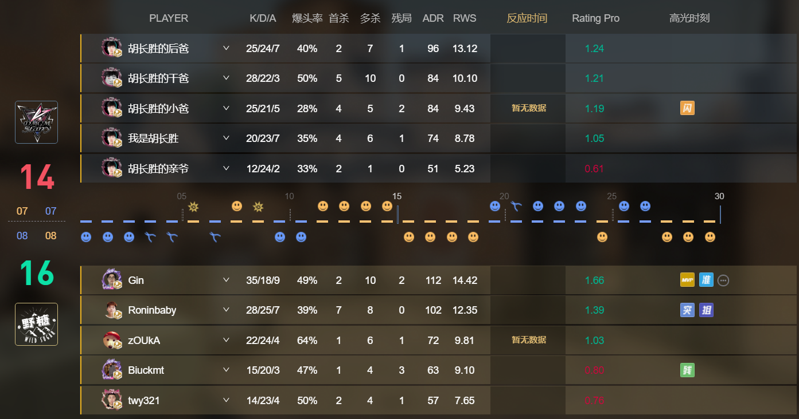
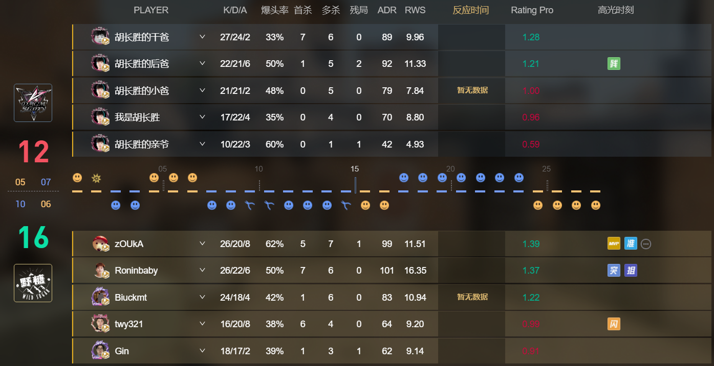
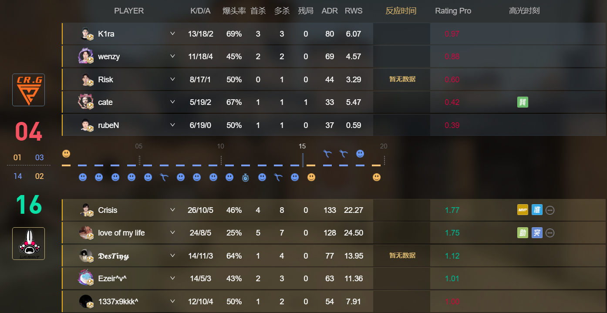

新闻中心
PPL S4挑战组：野糖 Guiyang顺利击败DMGM，CR.G让一追二Lord Rabbit
作者：完美世界电竞 时间：2023/04/28
PPL S4（完美平台超级联赛第4赛季）是由完美世界电竞主办的亚洲CS:GO官方职业联赛，面向亚洲范围内所有职业/半职业与非职业队伍，同时也为普通玩家提供自下而上的直升通道。随着挑战组排位赛的落幕，挑战组的正式对决也徐徐拉开帷幕。在今日的对决中，野糖 Guiyang、CR.G及JIJIEHAO各自击败对手获胜。
野糖 Guiyang 2-0 DMGM（Ancient 16-14，Inferno 16-12）
双方在首张地图Ancient上就打的极为焦灼，拿下手枪局的野糖虽然顺利5-0开局，但随后DMGM在进攻方开始连续得分，顺利在半场结束前将比分追至8-7。
半场互换后，再度赢下手枪局的野糖将比分拉开至12-7。再度起出长枪，DMGM打出了一波7-1的防守潮，顺利反超比分至13-14。但随后野糖连攻三分赢下比赛。

随后来到野糖的选图Inferno，进攻方开局的DMGM在拿下手枪局后打出了5-2的领先，但随后野糖统治了比赛。上半场余下的回合里，他们一分未丢，将半场比分锁定在10-5。
半场互换后，DMGM输掉了手枪局，然而他们在起出长枪后连守7分扳平比分。只是野糖没有再给对手机会，迅速连攻四分终结比赛。

CR.G 2-1 Lord Rabbit（Overpass 4-16，Ancient 16-11，Mirage 16-8）
首先来到CR.G的选图Overpass，赢下手枪局的CR.G迅速被Lord Rabbit强起翻盘。之后Lord Rabbit半场一分未丢。在14-1的绝对领先下，Lord Rabbit轻松赢下图一。

随后来到Lord Rabbit的选图Ancient。选择进攻方开局的CR.G虽然在丢掉手枪局后0-4落后，但再度起出长枪后，他们打出了一波5-1的进攻得分，并最终在半场结束前以7-8的微弱优势领先。半场互换后，虽然Lord Rabbit赢下了手枪局，但很快CR.G打出了一波7-1的防守潮，迅速扳回一城。